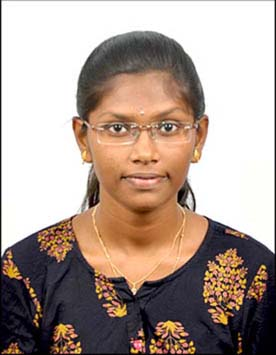

NAME :HEMA S
D.O.B: 04.11.2004
GENDER: FEMALE
FATHER'S NAME: SENTHILKUMAR V
MOTHER'S NAME: ANGALAPARAMESWARI S
PHONE NO: 8438359399
QUALIFICATION DETAILS:
Click here to see Qualification details
CO-CURRICULAR:
- NCC Cadet(AIR WING) - Attended achievements camp and went upto pre-IGC.
DOMAIN SPECIALIZATION:
PROGRAMMING:
PROJECT PRESENTATION:
Sustainable Development with AI-Powered Bots:
- Won 1st place in IDEATHON-2K23 in Kongu Engineering College.
- Won 2nd place in Rangutsav in K.S.R Educational Institutions.
- Won 1st palce in Madc club in Kongu Engineering College.
AREA OF INTEREST
- UI/UX Design
- Web Development
- Database management
PAPER PRESENTATION:
- Neurotechnology and brain computer interface - won 1st palace in Kongu Engineering College.
- The Dark side of social media.
INDUSTRIAL COLABORATIONS:
-
Visited the company Atees located in Thrissur,Kerala and interacted with them.
IMPLANT TRAINING:
- I went to the startup company Ratix Info Tech and learned Web Development from them.It gave a good experience.
LEADERSHIP QUALITY:
- Executive member of Self Development Club and organised an guest lecture on Aryabhatta to Aditya.
- Organised Skills and Thrills online event and have been the co-ordinator for the crafts and castle event
Hereby,I declare that the above provided statements are true.
Hema S
Signature